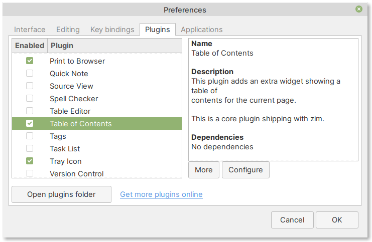

6.2.6. Activating more features using plugins¶
These are some plugins included with Zim:
- Insert Symbol
— insert special symbols and characters
- Table of Contents
— adds a widget displaying the current page’s table of contents
- Tags
— add tags to your notes
- Tray Icon
— adds an icon to system tray for quick access to your notebooks
- Spell Checker
— adds support for checking spelling
—
You will need to activate (or enable) them in preferences, before you can start using them.
Enabling a plugin¶
To enable a plugin:
Select
Click on the Plugins tab
Check the box corresponding to the plugin you wish to enable (Fig. 125)
Click on the OK button
 Fig. 125 Enabling plugins¶
Note
Some plugins have additional options.
Click on the Configure button below the plugin description to access these options.